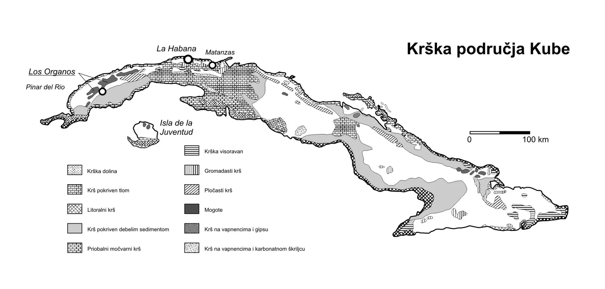

Speleološka ekspedicija 'Kuba 2004-2005.'
Vrlo je lako bilo probuditi našu radoznalost: pokoja priča, mnoštvo fotografija i već smo se nestrpljivo pripremali za speleološku ekspediciju "Cuba 2004/05»". Tropski krš kojim je prekriven veliki dio otoka i 11.000…

Teritorij Kube, osim nama najpoznatijeg i najvećeg otoka - Kube, obuhvaća Otok Mladosti (Isla de Juventud) i još 4.194 manjih i koraljnih otočića ukupne površine 110.992 km2 okruženih s 67.831 km2 plitkomorskog područja. Tropski krš obuhvaća 66% kopnene površine dok je gotovo cijelo plitkomorsko područje izgrađeno od vapnenačkih stijena. Stoga su krški oblici vrlo značajan element površinskog i podmorskog krajobraza (Iturralde-Vinent i Gutierrez Domech, 1999). Bogatstvo karbonatnim, uglavnom vapnenačkim stijenama, tektonika i tropska klima uvjetovali su stvaranje brojnih speleoloških objekata na Kubi. Danas je na Kubi poznato više od 11.000 speleoloških objekata (uglavnom špilja) s više od 450 km kanala. Najzanimljivija krška područja s najviše registriranih speleoloških obekata nalaze se u sjeverozapadnom dijelu Kube u provincijama Pinar del Rio (više od 4.000 speleoloških objekata), La Habana (više od 1.200 speleoloških objekata) i u provinciji Matanzas (oko 2.000 speleoloških objekata) (Šajn, Zupančić, 1998).
[caption id="attachment_3473" align="alignnone" width="1859"] rška područja Kube prema Núñez Jiménez (1984)[/caption]Jedno od glavnih obilježja kubanskog tropskog krša su mogote – po opisu kubanskih speleologa to su krška brda vertikalnih stijena i zaobljenih vrhova tako da iz daljine podsjećaju na slonova leđa. Mogote su zapravo ogromne vapnenačke kupole obrasle bujnom vegetacijom razbacane po dolini ili pak spojene u nepregledne masive. Po rubu mogota nalaze se desetci ili stotine špiljskih otvora koji vode u osebujne labirinte prostranih vodenih ili zasiganih kanala. Velik broj poznatih speleoloških objekata i još uvijek nepoznata i neistražena područja, te potpuno drugačiji krš od Hrvatskog bili su više nego dovoljni motivi za organizaciju speleološke ekspedicije. Godinu dana prije početka ekspedicije uspostavili smo kontakt s Kubanskim speleološkim savezom (Sociedad Espeleologica de Cuba) i započeli dogovore oko područja na kojem bismo istraživali. Nakon višemjesečne komunikacije, proučavanja dostupnih podataka s ranijih speleoloških ekspedicija na Kubi, te sugestije kubanskih speleologa odlučili smo se za brdsko područje Los Organos u kojem se nalaze najimpresivnije i najljepše mogote s najduljim speleološkim sistemima na Kubi.
[caption id="attachment_3474" align="alignnone" width="1893"] Majagua - jedan od brojnih špiljskih ulaza u mogote Sierra de san Carlos.Foto: D. Bakšić.[/caption]
Vapnenački masiv Los Organos smješten u provinciji Pinar del Rio pruža se u smjeru SI-JZ. Masiv je izgrađen od Gornjojurskih, Krednih i Tercijarnih vapnenaca. Stijene su izlomljene brojnim rasjedima i pukotinama, te lokalno naborane, generalno se spuštajući prema sjeveru. Područje je bogato površinskim krškim formama od mikroformi (šiljci, škrape i kamenice) do megaformi (mogote, polja i vrtače). U vapnenačkom masivu Los Organos špilje su se formirale kombiniranim djelovanjem horizontalnih vodenih tokova – rijeka nastalih u okolnim nekarbonatnim područjima, te vertikalnim tokovima – vertikalnom drenažom usljed kišnih oborina (1600-1800 mm godišnje) tvoreći labirinte velikih horizontalnih i manjih vertikalnih kanala povezanih u više etaža – u nekim špiljama i do 7 etaža (Iturralde-Vinent i Gutierrez Domech, 1999). Na prijedlog i preporuku kubanskih speleologa odlučeno je nastaviti speleološka istraživanja u špiljskom sistemu Majagua-Canteras. Špiljski sistem Majagua-Canteras istražuje se od 1962. godine. Istraživanja organiziraju i vode dva kubanska speleološka kluba "Martel" i "Arne Saknussem". U istraživanju ovog špiljskog sistema prije nas, u pratnji kubanskih speleologa, sudjelovale su speleološke ekspedicije iz Poljske, Španjolske i Slovenije. Informacije o Kubansko-Slovenskoj ekspediciji "Majagua 98" bile su ohrabrujuće. Slovenski su kolege zajedno s kubanskim speleolozima u špiljskom sistemu Majagua – Canteras u dijelu XX Aniversario nacrtali 400 m novih kanala nazvanih "Slovenska dvorana", zatim u dijelu "Las dos Anas" nacrtali su 75 m novih kanala. Istražili su i nacrtali dvije manje špilje nazvane Rosita duljine 100 m i Špelina jama 176 m (nazvanu po Špeli Klemen).
Na Kubu dolazimo 09. prosinca 2004. U Havani u "Sociedad Espeleologica de Cuba" nas dočekuju naši domaćini: Roberto Gutieres – predsjednik Kubanskog speleološkog saveza, Evelio Balado s kojim smo kontaktirali putem maila, Hektor Perez – pročelnik speleološke spašavateljske službe, domar i čovjek za sve, braća Flores – Ernesto i Leonardo (logističari), Oriol Chavez i Gabriel Garcia (dobri poznavatelji špiljskog sistema Majaguas Canteras), Antonio Castineyros, Manuel Rivero i simpatična i draga Anita Abraham.
MAJAGUA-CANTERAS Špiljski sistem duljine 33,5 kilometra u kojeg ulazi više vodenih tokova (rijeka i potoka). Ovaj špiljski sistem ima vrlo kompleksan hidrološki karakter. Voda, u razdoblju naglih i obilnih oborina, odnosi sedimente ponekad otvarajući, a ponekad zatrpavajući prolaze u špiljske kanale mijenjajući time poznatu morfologiju. Špiljski sistem čini više špilja povezanih u pet etaža. U blizini se nalaze brojne špilje za koje se pretpostavlja da pripadaju ovom sistemu, ali još nije dokazana veza, odnosno kanali koji ih spajaju. Špiljski sistem Majaguas-Canteras zbog svoje duljine i potencijalne povezanosti s okolnim špiljama i dalje je iznimno zanimljiv za nastavak speleoloških istraživanja. Uvjeti za boravak i istraživanje više su nego ugodni – temperatura zraka kreće se od 20 – 24 °C, dok je temperatura vode između 16 – 18 °C. Sve ovo zvuči prilično ohrabrujuće.
[caption id="attachment_3477" align="alignnone" width="1392"] Špilje spojene u špiljski sistem Majagua-Canteras, foto: D. Bakšić[/caption]Već u samom početku, pokazalo se da ćemo zadani cilj o nastavku istraživanja u špiljskom sistemu Majaguas-Canteras teško ostvariti. Prvi puta dolazimo na teren 13. prosinca 2004. godine i već nakon nepuna dva dana (15 prosinca 2004.), zajedno s našim domaćinima, prisiljeni smo napustiti područje zbog vojne vježbe "Bastillon 2004". Kubanski speleolozi obećali su učiniti sve kako bismo se vratili na teren i nastaviti speleološka istraživanja pa se ipak vraćamo u špiljski sustav Majaguas-Canteras gdje od 03. do 10. siječnja istražujemo. Očito su se naši planovi i shvaćanje istraživanja razlikovali od kubanskih tako da nekoliko dana provodimo u upoznavanju sa špiljskim sustavom. Sav trud da ubrzamo "upoznavanje" špilje i da se podijelimo u više grupa kako bi svaka mogla samostalno istraživati pada u vodu. Domaćini se ne slažu s našim idejama i zahtjevaju da vidimo sve dijelove špilje.
[caption id="attachment_3478" align="alignnone" width="1024"] Ulazni dio Dos Anas, Foto: D. Bakšić[/caption]Na pitanje da nam pokažu nacrt i kažu gdje treba nastaviti istraživanje izbjegavaju odgovoriti. Najčešći odgovor bio bi: "It s possible, but... " I tako smo s jedne strane oduševljeni velikim špiljskim prostorima, ogromnim kanalima i špiljskim ukrasima, a s druge pomalo frustrirani jer ne odlučujemo ni o čemu. Nakon što smo konačno "upoznali" špilju kubanski nas speleolozi traže da ponovimo izmjeru poligonskog vlaka već poznatih špiljskih kanala u dijelovima Dos Anas i XX Aniversario jer su stara mjerenja loša i nepotpuna. Ne baš presretni što opet „gubimo“ na vremenu za istraživanje novih kanala obavljamo i taj dio posla. Za istraživački rad ostala su nam samo dva dana i tu smo uspjeli istražiti jednu kratku galeriju u dijelu špilje XX Aniversario, te smo našli i istražili jednu manju jamu. Zatim smo pronašli i nacrtali povratni kanal u velikoj dvorani "Felix Ugarte" u špilji Dos Anas.
Rezultat ekspedicije je izrađen poligonski vlak u Dos Anas i XX Aniversario ukupne duljine 4777 m, istražena galerija duljine 30 m i jama dubine 25 m, te kanal duljine 177 m. Napravljena je bogata fotodokumetacija špiljskog sistema Majagua-Canteras u dijelovima Dos Anas, XX Aniversario i Dos Hermanos. Posjećena je dvorana "Los Pacharos" dimenzija 400 x 200 m x 100 m visine, koja je po Kubanacima jedna od najvećih na svijetu.
Za vrijeme ekspedicije posjetili smo još i špiljske sisteme Santo Tomas, Bellamar i Santa Catalina.
[caption id="attachment_3486" align="alignnone" width="2272"] Dos Anas[/caption]ŠPILJSKI SISTEM SANTO TOMAS (LA GRAN CAVERNA DE SANTO TOMAS)
Špiljski je labirint na sedam etaža, ukupne duljine 47 km i dubine 89 m smješten u 400 m visokoj Quemado mogoti. To je drugi po duljini špiljski sistem na Kubi (Oldham T., 2003).
ŠPILJSKI SISTEM BELLAMAR (CUEVAS DE BELLAMAR)
Jedna je od najstarijih speleoloških turističkih atrakcija poznata po svojoj ljepoti i speleothemima. U većini dostupne literature pronaći ćete podatak o duljini od 3.225 m. Za turistički posjet uređeno je 1.500 m. Trajanje posjeta je 45 minuta. Za vrijeme posjeta obiđe se 6 dvorana i 17 bogato ukrašenih galerija. Prosječna temperatura je u rasponu od 25° do 27 °C. (Oldham T., 2003).
[caption id="attachment_3482" align="alignnone" width="800"] Bellamar je otkriven u travnju 1861. godine. Foto: D. Bakšić[/caption]Nakon razgovora s Estebanom R. Grau-om, profesionalnim speleologom čuli smo da su od 1989. godine intenzivirana speleološka istraživanja čime su otkriveni novi dijelovi špilje, pa je duljina narasla preko 7 km. Zahvaljujući Estebanu koji se ponudio kao vodič nismo platili ulaz, a uspjeli smo obići i neke dijelove koji turistima nisu dostupni.
ŠPILJSKI SISTEM SANTA CATALINA (CUEVA GRANDE DE SANTA CATALINA)
Nalazi se na otprilike pola puta od Matanzasa prema Santa Marti nakoliko kilometara zračne linije od mora. Špilja je dugačka 12 kilometara i ima 36 ulaza. Ulazi se nalaze u razini tla dobro sakriveni bujnom vegetacijom koja sliči našoj makiji. Bez vodiča gotovo da je nemoguće pronaći ulaze u špilju. Ova špilja, kao i Cueva de Ballamar, obiluje neobičnim špiljskim ukrasima: aragonitima, kristalima, heliktitima, predivnim pizolitima i vrlo neobičnim zasiganim gljivama po čemu je posebna. Za sada su u svijetu još u samo jednoj špilji u Francuskoj zabilježene ovakve gljivolike forme, ali znatno manjih dimenzija.
[caption id="attachment_3484" align="alignnone" width="2078"] "Gljivoliki stalagmiti" iz Santa Cataline i njihov postanak po Hill & Forti (1997).Foto: D. Bakšić[/caption]
Esteban je bio naš vodič i u ovoj špilji. Špiljski sistemi Bellamar i Santa Catalina posljednjih se godina istražuju u suradnji s talijanskim speleolozima. Općenito se može reći da su Kubanci dobri speleolozi što nije neobično obzirom na tako veliki broj istraženih špilja. Potencijal za speleološka istraživanja još je uvijek ogroman, ali uz određena ograničenja političkog sistema. Nakon razgovora s talijanskim speleolozima shvatili smo da je potrebno nekoliko godina uzastopnog dolaženja kako bi se izgradilo povjerenje i dobila mogućnost za pravo istraživanje. Između Kubanskog i Talijanskog speleološkog saveza potpisan je sporazum o suradnji. I SO Velebit potpisao je sporazum o suradnji sa speleološkim klubom Martel. Nadamo se da je to prvi korak i da će nekoj budućoj hrvatskoj speleološkoj ekspediciji na Kubu biti lakše.
POPIS ČLANOVA EKSPEDICIJE KUBA 2004-2005 Vođa ekspedicije: Ivica Ćukušić Članovi ekspedicije: Ana Bakšić, Darko Bakšić, Dean Bratušek, Robert Erhardt, Filip Filipović, Bojana Horvat, Sunčica Hrašćanec, Tihana Krmpotić, Milan Miljuš, Sandi Novak, Ivica Radić, Tomislav Rataj, Maja Roboz, Leonara Smirnjak, Biljana Težak, Ena Vrbek, Ronald Železnjak
VEZANI ČLANAK: KUBA - PUT U PROŠLOST Literatura: • Hill, C. & P. Forti, 1997: Cave Minerals of the World, Second Edition, National Speleological Society, Inc., Huntsville, Alabama, U.S.A., p 220; • Iturralde-Vinent, M. A. & M. R. Gutierrez Domech, 1999: Some examples of Karst development in Cuba, Boletin Informativo de la Comision de Geoespeleologia, Federacion Espeleologica de America Latina y el Caribe, FEALC, No 14.; • Nunez Jimenez, A (editor), 1984: Cuevas y crsos, La Habana: Editoria Cientifico-Tecnica, 2 nd edition, 1990; • Oldham T., 2003: La Gran Caverna de Santo Tomas, ShowCaveBlog, http://www.showcaves.com/english/cu/showcaves/SantoTomas.html • Šajn, R.& P. Zupančić, 1998: Kubansko-slovenska jamarska odprava „Majagua 98“, http://www.ljudmila.org/jkz/html/body_kuba.html [gallery ids="3493,3490,3505,3513,3514,3512,3511,3510,3492,3491,3489,3494,3495,3496,3497,3498,3499,3501,3502,3503,3506,3507,3508,3509,3516,3517,3519,3518,3520,3521,3522,3523,3524,3525,3526,3527,3528,3529,3530,3531,3532,3533,3534,3535,3536,3537,3538,3542,3541,3540,3539" type="rectangular"]